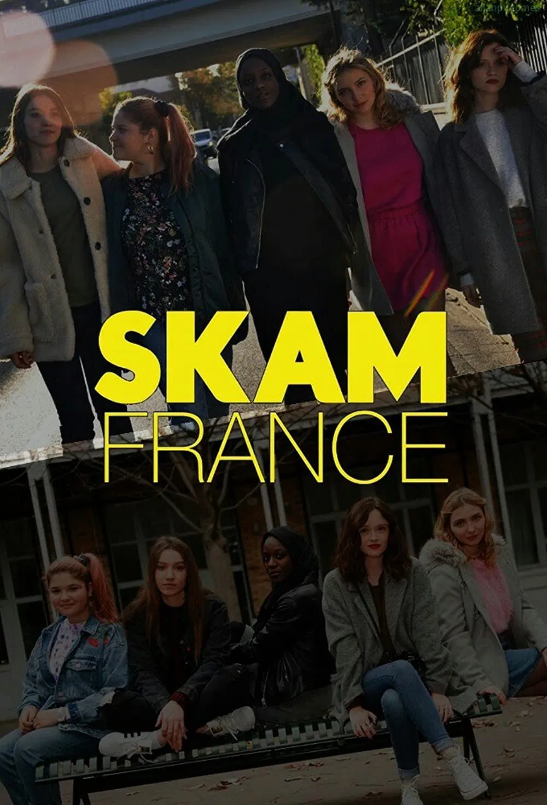

Skam France – це французька адаптація норвезького серіалу Skam, яка стартувала у 2018 році. Серіал зберіг основні теми оригіналу: життя підлітків, дружбу, кохання та проблеми сучасної молоді. Особливість французького ремейку – глибоке занурення у соціокультурне життя Франції та інтерактивні онлайн-матеріали, які доповнюють сюжет.
© 2025 SKAM Fan Site